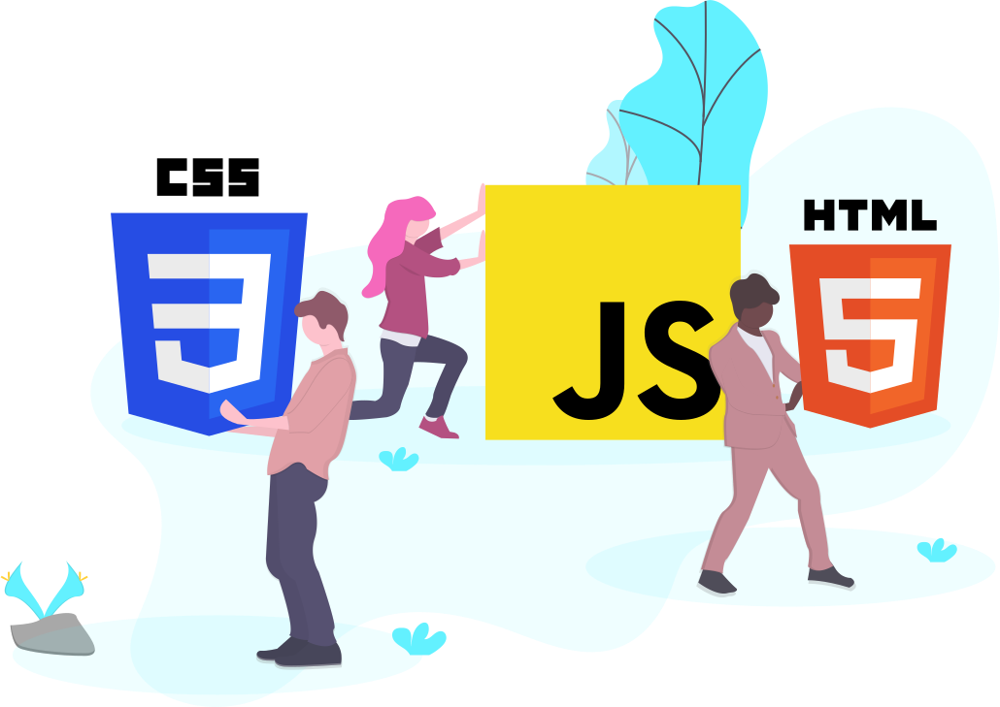

Intro

We are software developers who started to learn programming later in life. Coming from different technical backgrounds, we development an interest in software development. In our pursuit, we found out that we are not2Old2Code and wanted to share our resources to help inspire others.
Resouces

Front-End
When you visit a website, what you see is what a front-end developer will create. The fonts, layout, design, menus, buttons and anything else you see is a front-end developers focus.
Back-End
There are processes that happen when a user visits a website. The front end will save and retrieve data, usually by calling an API (application programming interface). Back-end developers will create and maintain API’s using server-side languages like C#, Java, and Python (there are others that can be used, but these are common languages that are used). Within those API’s, there is communication to databases (common databases are SQL, MySQL, MongoDB) to save or retrieve data.
Full Stack
When a developer does the duties of the front-end and back-end, this is considered full stack. Full stack developers can also set up and configure websites so there are other skills needed to do this, like cloud computing services such as Microsoft Azure or Amazon AWA. They tend to be a jack of all trades.
From the things that we have learned, we found that there are 3 common areas it is important to learn and those are HTML, CSS and JavaScript.
Here are some very useful resources that we have found:
HTML